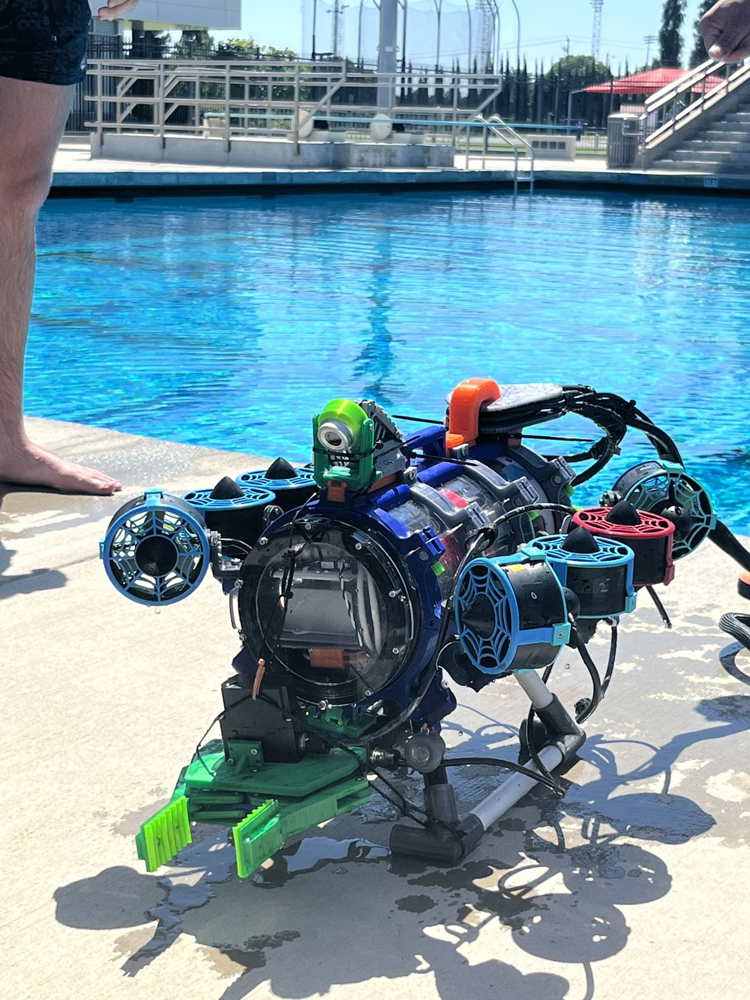
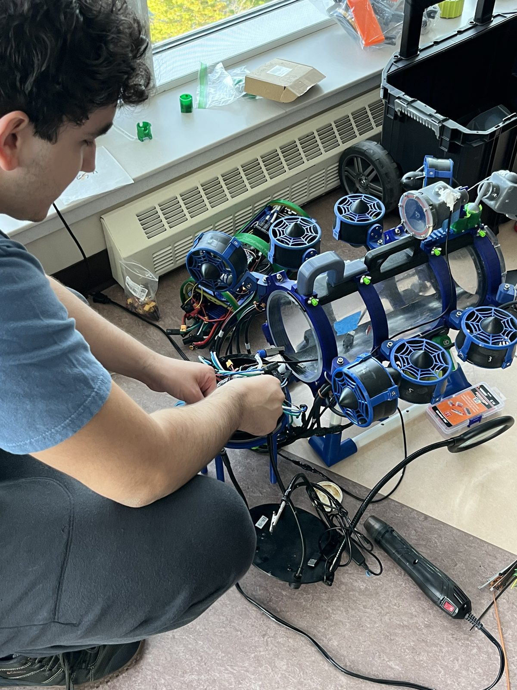
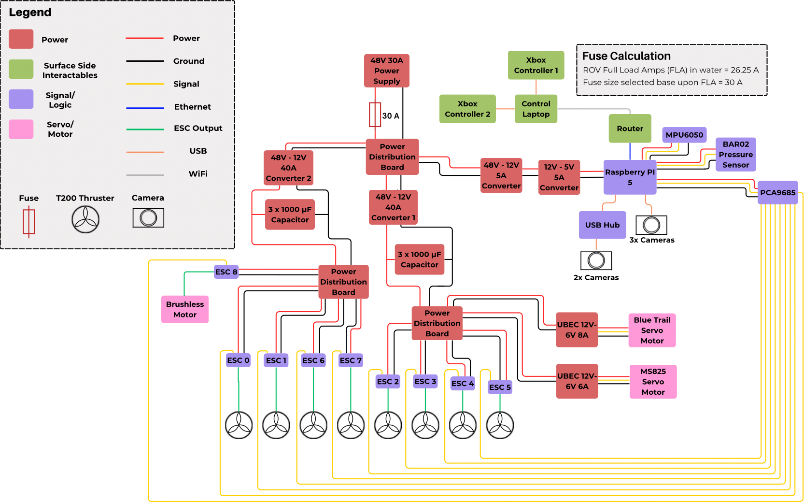

Crush Depth ROV: A Remotely Operated Vehicle for the MATE ROV World Championship
Abstract. Crush Depth's ROV performs simulated environmental-research and industrial-inspection tasks for the MATE ROV competition. Eight Blue Robotics T200 thrusters are driven from a Raspberry Pi 5 through ESCs and a PCA9685; four cameras in SLA-printed waterproof housings give the pilot vision; power arrives at 48 V DC on the tether and is stepped down through buck converters. The structure is custom, SolidWorks-modeled and FDM-printed. The author, the team's Co-CEO / CTO, owned the electrical and software domains and designed the vehicle's internal electronics mounts and its service stand; the chassis, housings, and manipulator are the work of the team's mechanical group. The vehicle competed at the World Championship in 2025 and 2026, and the author received the Engineering Presentation MVP award in 2026.
1Mechanical Design
The vehicle's structure is custom, modeled in SolidWorks and printed FDM on Bambu Lab machines: an outer chassis, an internal housing that carries the electronics stack, and a TPU foam ballast printed to shape. A custom manipulator, designed against the competition's mission tasks, is the vehicle's working end. The four cameras sit in SLA-printed waterproof cases that interface with FDM-printed mounts, using SLA where the sealing surfaces need its resolution and FDM elsewhere for speed.
Waterproofing is handled as a vehicle-level strategy rather than a per-part fix. Every penetration, housing, and connector has to hold at mission depth for the vehicle to score at all.
The author's mechanical contributions were on the serviceability side. The tether penetrators are epoxied into the backplate, so a vehicle set down on its backplate loads the epoxy joints; the author designed a stand that holds the backplate clear of the bench so the vehicle can be worked on and shown without pressing on the penetrators. The author also designed the mounts that locate the electronics inside the housing.


2Electronics and Power
A Raspberry Pi 5 is the vehicle computer. It drives eight Blue Robotics T200 thrusters through ESCs via a PCA9685 PWM driver, reads an MPU6050 IMU for attitude sensing, and carries four camera feeds for the pilot. The tether delivers 48 V DC from a 30 A supply through a 30 A fuse; two 48-to-12 V 40 A converters feed the thruster ESCs through power distribution boards, with a 3 × 1000 µF capacitor bank on each, and a separate 48-to-12 V 5 A converter and 12-to-5 V 5 A converter carry the Pi and its peripherals. Two UBECs supply the manipulator servos at 6 V. The fuse was sized from a calculated full-load current of 26.25 A in water. Figure 2 is the system interconnect diagram the author drew for the 2026 vehicle.

| Subsystem | Component | Notes |
|---|---|---|
| Vehicle computer | Raspberry Pi 5 | control software in C++ |
| Propulsion | 8× Blue Robotics T200 | ESCs via PCA9685 PWM driver |
| Attitude | MPU6050 IMU | — |
| Vision | 4× camera | SLA-printed waterproof cases on FDM mounts |
| Power | 48 V DC tether, 30 A supply, 30 A fuse | calculated full load 26.25 A |
| Conversion | 2× 48–12 V 40 A; 48–12 V 5 A; 12–5 V 5 A; 2× UBEC 12–6 V | thrusters, Pi, servos |
| Structure | FDM chassis, housing, TPU ballast | SolidWorks; Bambu Lab printers |
| End effector | custom manipulator | designed against mission tasks |
3Control Software
The control architecture, written in C++, is designed around pilot ergonomics: the layout of controls and behaviors is chosen for ease of piloting under mission time pressure, rather than for a clean mapping to actuators. Mission scores depend on what the pilot can actually execute.
4Team and Role
Crush Depth is roughly 47 members of Clovis Community College's Engineering Renaissance Club, structured deliberately like a company per MATE guidelines. The author is Co-CEO / CTO, co-managing the team with Luke Salazar, and owns the electrical and software domains, promoted from Float Team Technical Lead. Operations at this scale are their own engineering problem: Gantt scheduling, BOM management, and holding deadlines across subteams.
At the 2026 World Championship the author won the Engineering Presentation MVP award.
5Known Limitations
- The power budget is calculated, not measured: the 26.25 A full-load figure comes from component ratings, and no current draw was logged in operation. Converter sizing was validated by operation.
- Manipulator payload capacity is unquantified.
- The hardware is currently not accessible to the author; this memorandum is limited to what was documented at build time.